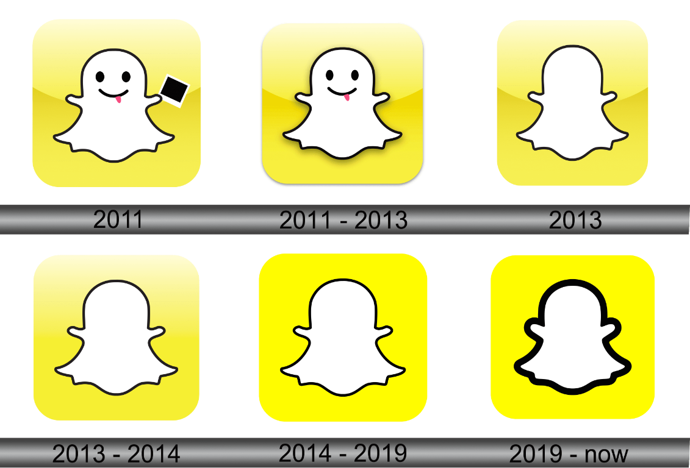

Historie sociální sítě
Snapchat
Zprávy a příběhy, které zachytily okamžik
- Rok spuštění
- 2011
- Zakladatelé
- Evan Spiegel, Bobby Murphy a Reggie Brown
Vývoj loga Snapchatu

Od Picaboo ke Snapchatu
Snapchat vznikl jako projekt studentů Stanfordovy univerzity Evana Spiegela, Bobbyho Murphyho a Reggieho Browna. První verze aplikace se v roce 2011 jmenovala Picaboo a umožňovala posílat fotografie, které po zobrazení zmizely. Později téhož roku byla aplikace přejmenována na Snapchat a rozšířila se o další způsoby sdílení.
Pomíjivé zprávy a nové způsoby sdílení
První verze aplikace zaujala fotografiemi, které po zobrazení zmizely. Záměrem bylo sdílet neformální okamžiky bez očekávání, že každý snímek zůstane trvale na profilu. V roce 2013 Snapchat představil Stories – řadu fotografií a videí, která byla přátelům dostupná po dobu 24 hodin. Tento způsob vyprávění dne později převzaly i další sociální sítě.
Do komunikace přibyly textové zprávy, videohovory, filtry a rozpoznávání obličeje. Lenses umožnily měnit vzhled obličeje nebo přidávat digitální objekty do okolí pomocí rozšířené reality. Aplikace se tak posunula od jednorázových fotografií k širší sadě nástrojů pro komunikaci a tvorbu.
Mapy, objevování a rozšířená realita
Snap Map nabídla sdílení polohy s přáteli a prohlížení veřejných příspěvků z různých míst. Sekce Discover přinesla profesionální obsah od vydavatelů a tvůrců. Později Spotlight představil krátká videa doporučovaná širšímu publiku a rozšířil Snapchat také o objevování obsahu mimo seznam přátel.
Společnost Snap pokračuje ve vývoji brýlí Spectacles a nástrojů rozšířené reality. Snapchat si zachovává důraz na komunikaci mezi přáteli, současně však soupeří o pozornost s platformami zaměřenými na veřejná videa. Pomíjivost zpráv navíc neznamená úplnou záruku soukromí: příjemce může obsah například zachytit snímkem obrazovky.
Klíčové milníky
-
2011 · První verze aplikace
Picaboo představilo pomíjivé fotografie. Po přejmenování na Snapchat se aplikace začala rychle šířit mezi mladými uživateli.
-
2013 · Snapchat Stories
Příběhy umožnily spojit fotografie a videa do příspěvku, který byl dostupný 24 hodin.
-
2016 · Snap Inc. a Spectacles
Společnost se přejmenovala na Snap Inc. a představila Spectacles, sluneční brýle určené k pořizování krátkých videí.
-
2017 · Snap Map
Nová mapa umožnila sdílet polohu s přáteli a objevovat veřejné příběhy z různých míst.
Vliv na společnost
Snapchat zpopularizoval pomíjivé příspěvky a formát Stories, který později převzaly i další sociální sítě. Rozšířil také používání filtrů a rozšířené reality při komunikaci a tvorbě obsahu.